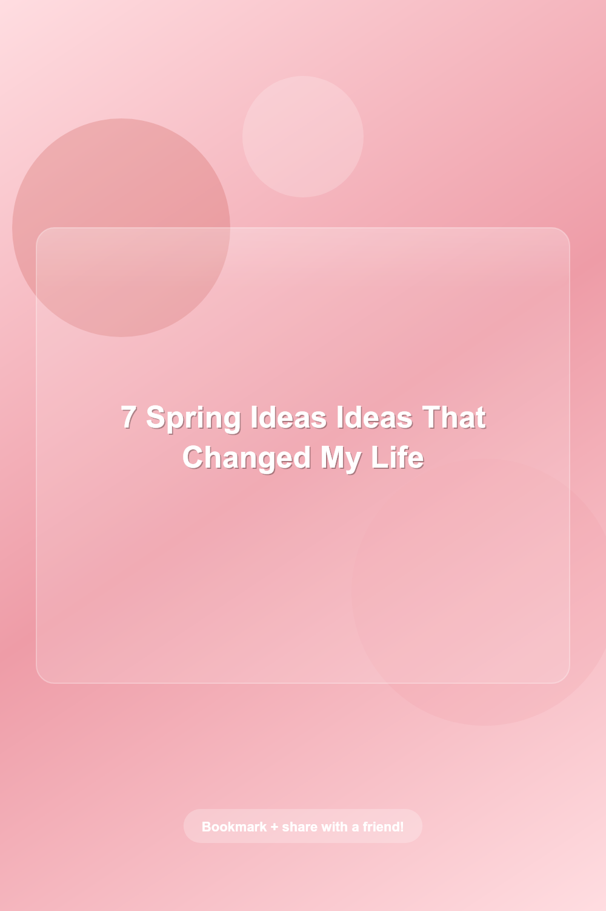
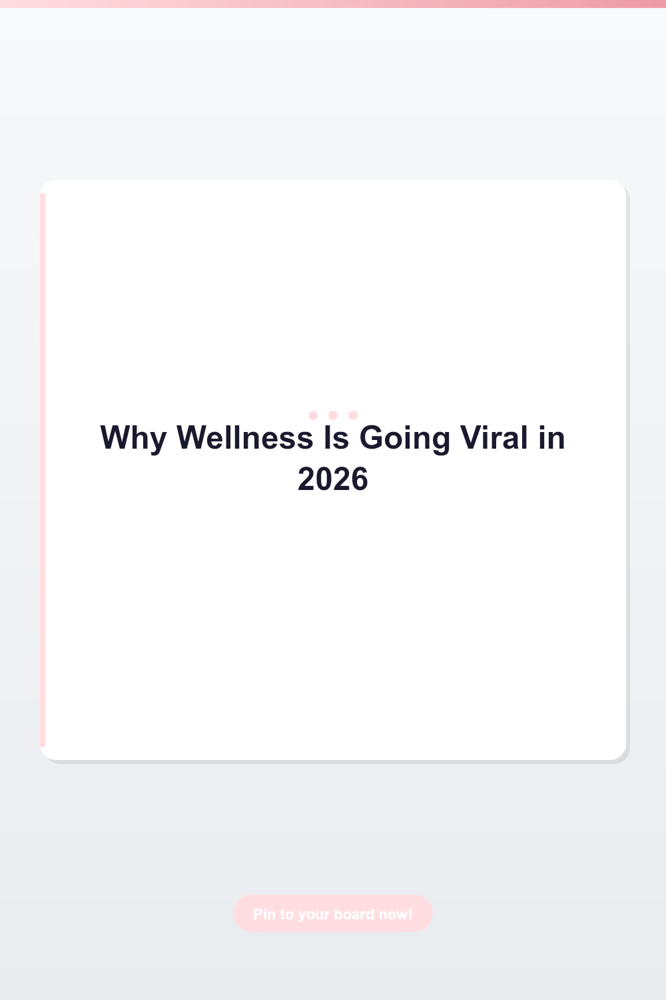
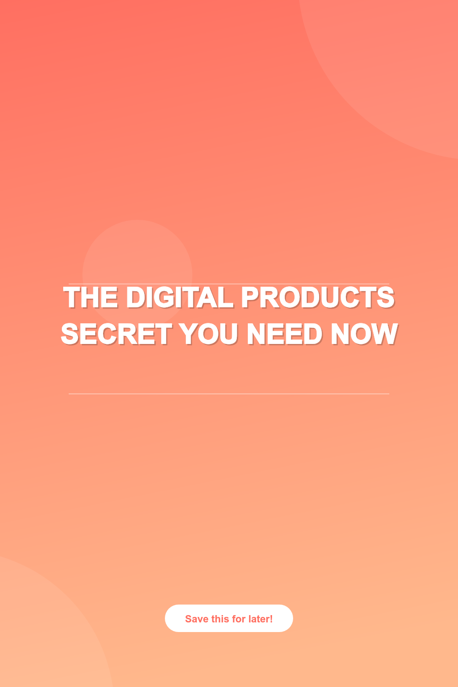

Smart Living Guides
Use these guides as practical checklists. Some recommendations may later include affiliate links; commercial links are disclosed clearly and do not change the editorial checklist.
Small Space Organization That Stays Organized

Good organization starts with fewer decisions, not more bins. The best small-space systems make the next action obvious: where an item belongs, when it leaves the room, and what gets restocked.
Quick Wins
- Use one visible tray for daily drop-zone items, then clear it every night.
- Group storage by task: morning routine, cleaning reset, meal prep, paperwork.
- Buy containers only after measuring the shelf and counting the items.
- Keep one donation bag active so clutter leaves the house before the weekend.
Healthy Meal Prep Without Cooking All Sunday

The easiest meal prep system is modular. Prep ingredients once, then assemble different meals during the week so lunch does not feel repetitive by Wednesday.
Weekly System
- Cook one protein, one grain or starch, and two vegetables.
- Wash and portion snack produce before putting groceries away.
- Make two sauces: one creamy, one bright or acidic.
- Freeze one backup meal so takeout is not the emergency plan.
AI Productivity Tools Worth Testing
An AI tool is useful only when it removes a recurring task. Start with one workflow, measure time saved, and avoid stacking five tools that all do the same thing.
Use Cases That Usually Pay Off
- Drafting repeatable emails, briefs, outlines, and content calendars.
- Turning messy notes into structured tasks and next actions.
- Repurposing one article into Pin titles, descriptions, and short scripts.
- Generating first-pass images or mood boards before final design.
Low-Risk Side Hustle Ideas for Beginners
The strongest beginner side hustles are boring in the right way: easy to explain, easy to deliver, and built around a real buyer problem. Avoid ideas that require a large audience before they can earn.
Good First Experiments
- Digital templates for one specific job: budget planner, content calendar, classroom tracker.
- Productized services: Pinterest cleanup, blog formatting, short-form editing, listing optimization.
- Affiliate content around tools you already use and can explain honestly.
- Simple email lead magnets that collect an audience before launching a product.
Budgeting Basics That Reduce Decision Fatigue
A useful budget tells money where to go before the month gets noisy. Start with predictable bills, then create small buffers for the categories that usually break the plan.
Starter Framework
- Separate fixed bills, flexible spending, sinking funds, debt, and savings.
- Use one weekly money check-in instead of checking every purchase emotionally.
- Make sinking funds for annual expenses before they become emergencies.
- Track only the categories you actually change: groceries, eating out, shopping, subscriptions.
Simple Skincare Routine Before Product Overload

A good skincare routine is consistent, gentle, and easy to repeat. Most beginners need fewer products, not a larger shelf.
Basic Routine
- Morning: gentle cleanse or rinse, moisturizer, sunscreen.
- Evening: cleanse, moisturizer, one treatment if needed.
- Add new products one at a time and wait long enough to notice irritation.
- Use sunscreen daily before spending money on advanced treatments.
Morning Routines That Actually Survive Busy Weeks
A routine should lower friction. The right question is not "what does the perfect morning include?" but "what makes the next 12 hours easier?"
Build a Minimum Routine
- Pick three anchors: hydration, light movement, and one planning note.
- Set up the night before: clothes, bag, lunch, first task.
- Keep the routine under 20 minutes until it becomes automatic.
- Use journaling prompts only when they lead to a decision or action.